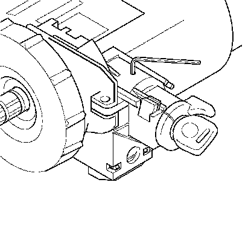
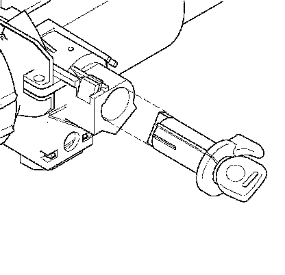
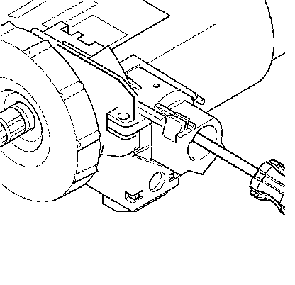

Ignition Lock Cylinder Replacement
Ignition Lock Cylinder Replacement
Removal Procedure
Caution: Refer to SIR Caution.
1. Disable the SIR system.
2. Remove the steering column trim shroud.
3. With the key installed hold it in the START position.

4. Install an allen wrench into the hole on top of the ignition lock cylinder case.
Push down on the allen wrench to release the tab on the lock cylinder inside the lock cylinder housing.

5. Slide the ignition lock cylinder out of the ignition lock cylinder case.
Installation Procedure

Important: The gears between the ignition switch and the lock cylinder housing must be in the correct position. Failure to do so will cause a misalignment of the gears in the ignition switch and the lock cylinder housing, which may result in a NO START or BATTERY DRAIN.
1. Use a screwdriver to rotate the ignition lock cylinder case gear to the start position - allowing it to spring return into the RUN position.
2. Install the key into the ignition lock cylinder.
3. Align the ignition lock cylinder and install it into the ignition lock cylinder case.
4. Install the steering column shroud.
5. Enable the SIR system. Refer to SIR Disabling and Enabling.